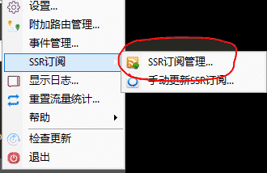
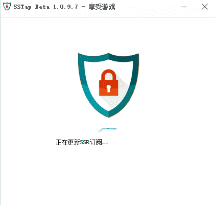
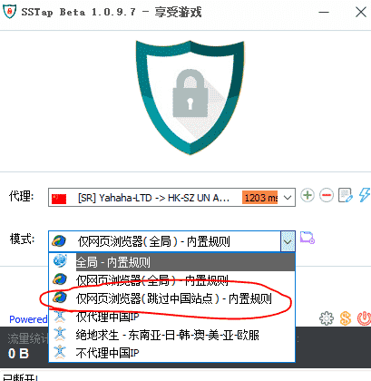

开始科学上网
须知：
好，我知道了
<<<<<<< HEAD 梯子状态：开启 ； 剩余流量：22G； 剩余时间：14天； ======= 姊瓙鐘舵€?：关闭 ； 鍓╀綑娴侀噺：-99999999999999999999999G； 鍙敤澶╂暟：-99999999999999999天； >>>>>>> 29b5017c5058000b4bbf97bb16fc56ab2fe11cec
解压，运行 SSTap 文件夹下的 tap-windows-9.21.2.exe 以安装 OpenVPN 虚拟网卡驱动
看到这个就算安装完成了
解压，运行 SSTap 文件夹下的 tap-windows-9.21.2.exe 以安装 OpenVPN 虚拟网卡驱动
记得先关掉你的杀毒软件再安装哦~
打开 SSTap.exe,找到这个
戳他，然后在菜单里找到SSR订阅 > SSR订阅管理 > 添加订阅网址,点开他
复制这段网址粘贴到url那一栏后点击右边的“添加”（地址见群）
关闭SSTap订阅管理，如果一切正常应该会加载订阅
如果没有，或者刷出来的代理是空的，那就手动更新他一下。按之前的步骤找到小齿轮，在菜单里找到 SSR订阅 > SSR订阅管理 > 手动更新订阅。
点击代理，选择一个节点

然后点击右边的小闪电测试他能不能用
如果测试未通过，则代表这个节点暂时不能用了，再选一个吧
如果tcp测试通过了，udp没过，那就说明你只能用这个节点看网页，不能作为代理加速游戏什么的
关于节点：
节点名字前面的两个字母才代表他真正的区域，那个国旗只是辅助判据。CN代表中国,US代表美国,MO代表澳门,HK代表香港
选择一个模式，如果你只看网页的话推荐选择【仅网页浏览器(跳过中国站点)】。如果你用浏览器看国内网页觉得卡或者出现问题可以断开连接
当然这也是给我省点流量~~~
最后点击连接，就大功告成啦~
免费梯子，签到领流量。付费套餐价格还不错Youyun666平时用用还凑合。具体教程见官网
一般刷新一下页面就好，如果还有问题，就断开梯子再刷新
502：这是梯子被检测出来了，梯子断开连接然后刷新就好
没网：换个节点，如果不行就再换一个
手动更新订阅即可（方法见这里的Step3），如果还是没有，检查你的网络有没有连好(当然你能看这个了就不是网络问题)如果还是bug就来找我吧
换一个节点，直到能用为止。什么？所有节点都没用？...那你来找我吧
如果是加载网页连接超时，但是节点能连上，那么换一个节点（这个节点延迟太大，常见于晚高峰）
如果还没有解决你的问题就到群里来问我吧~
BGM:死机之歌